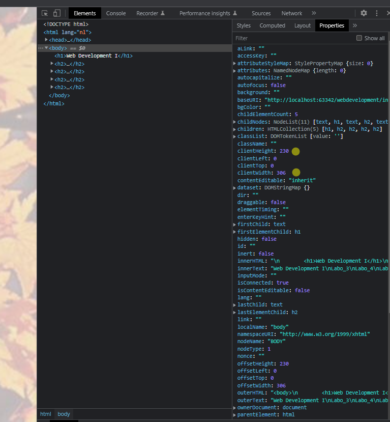
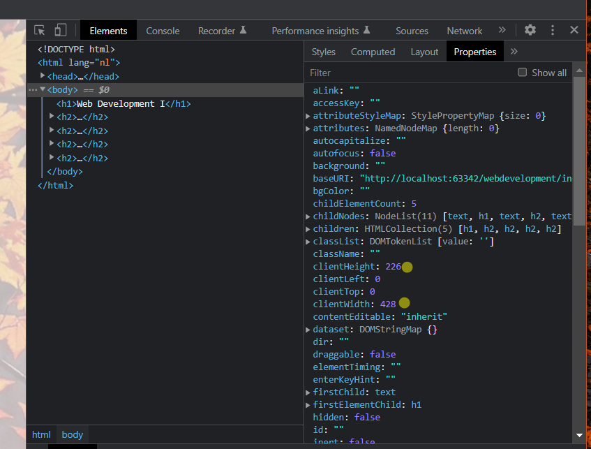

Opdracht 4
Open twee verschillende designs, rechtsklik en kies bij elk voor 'View page source'. Zet de twee
vensters met HTML-code naast elkaar op je scherm en vergewis je ervan dat de inhoud bij beiden
(bijna) exact dezelfde is.
Welke verschillen zie je?
Bij properties verandert de clientHight en de clientWidth
fullscreen:
smallscreen:
